Your device is too small or your browser is not up-to-date enough to effectively view this data-rich presentation.
For the best experience please use the latest Chrome, Safari or Firefox browser or a device larger than a mobile phone.
Presentation Overview
How does Washington compare to the rest of the country?
How do the counties in Washington compare to one another?
Are there differences by age, race and poverty level?
4th Grade Reading Achievement Levels
Percentage of fourth grade public school students reading achievement levels, at or above proficiency, as measured and defined by the National Assessment of Education Progress (NAEP) reading test. Washington ranks 10th highest for reading achievement and is tied with Pennsylvania.
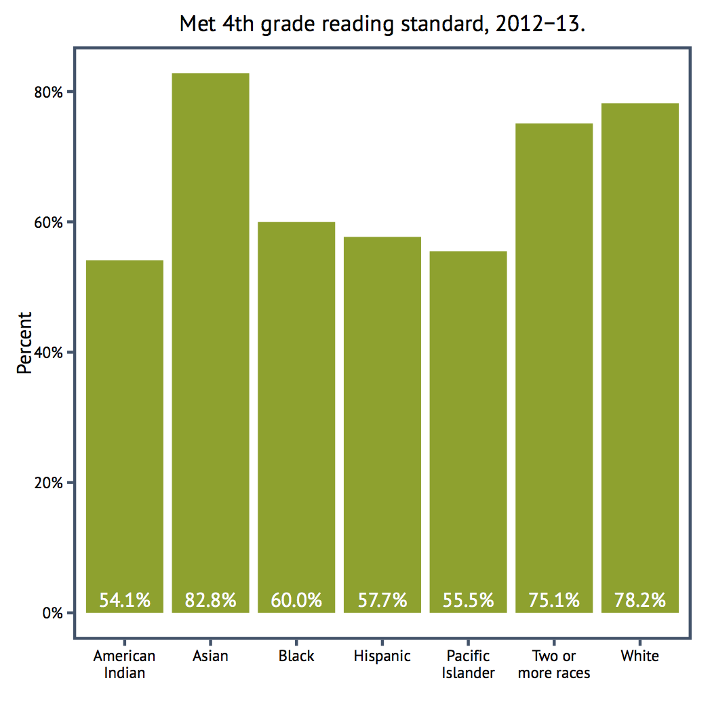
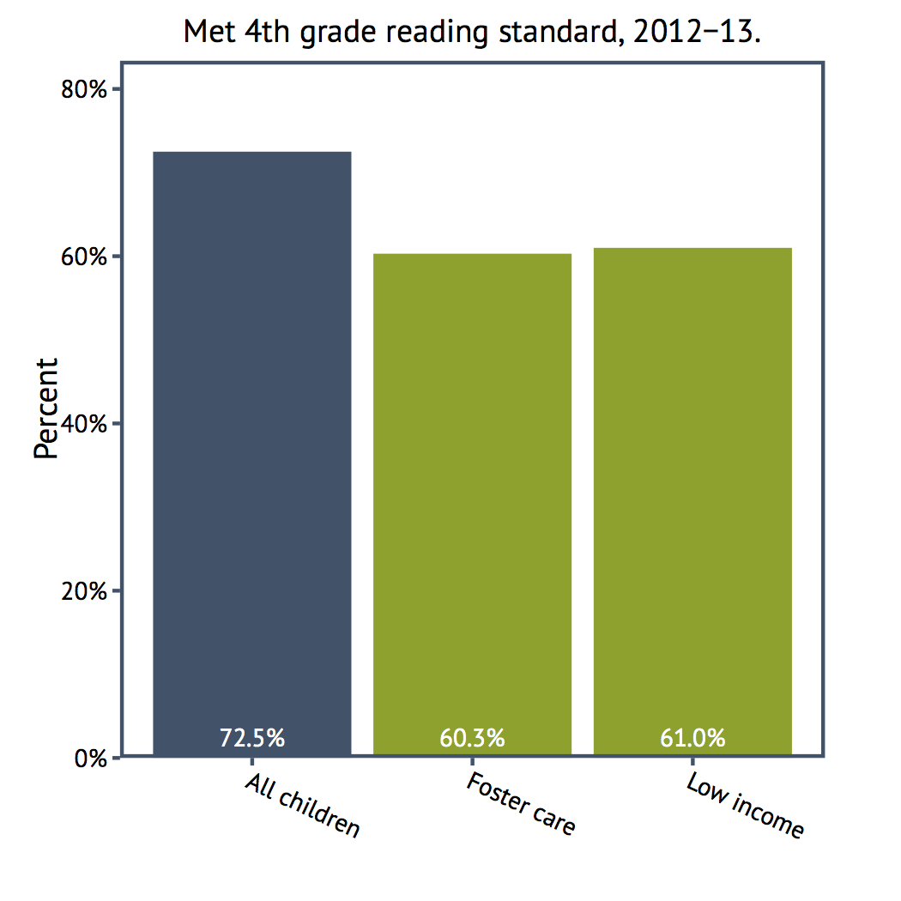
Source: WA OSPI, Washington State Report Card, 2012-2013
Graduation Rates
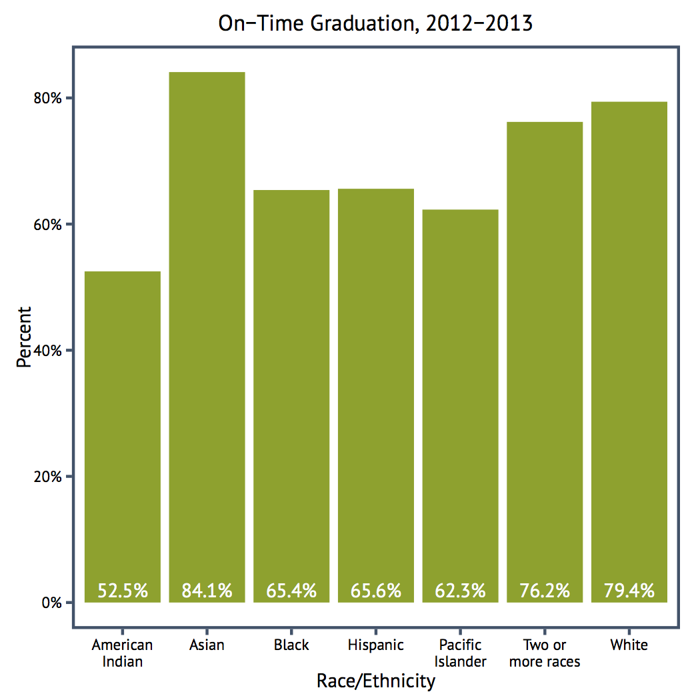
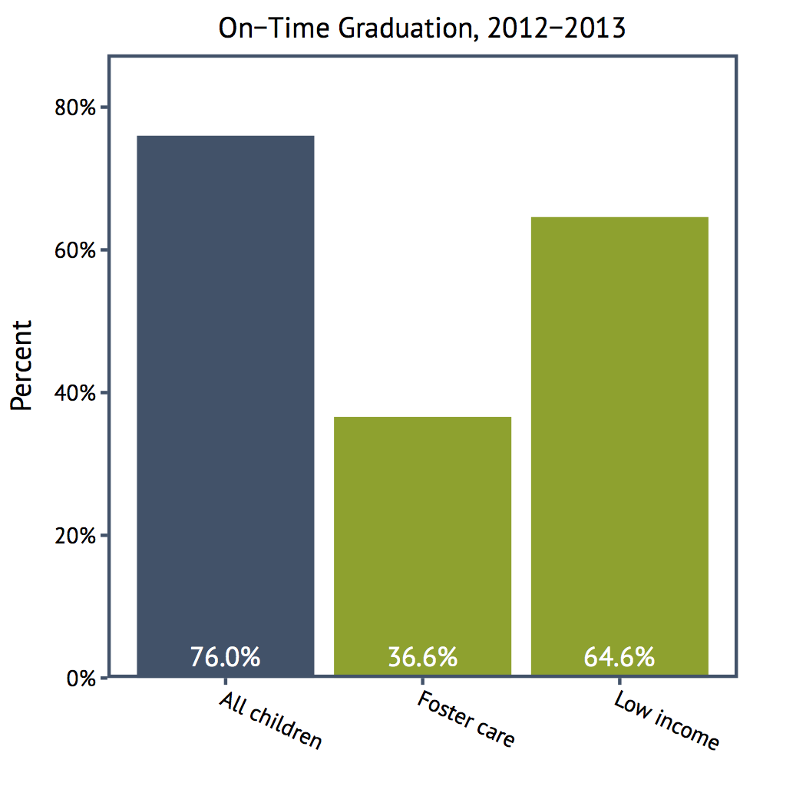
Source: WA OSPI, Graduation and Dropout Statisitcs Annual Report, 2012-2013
Teen Birth
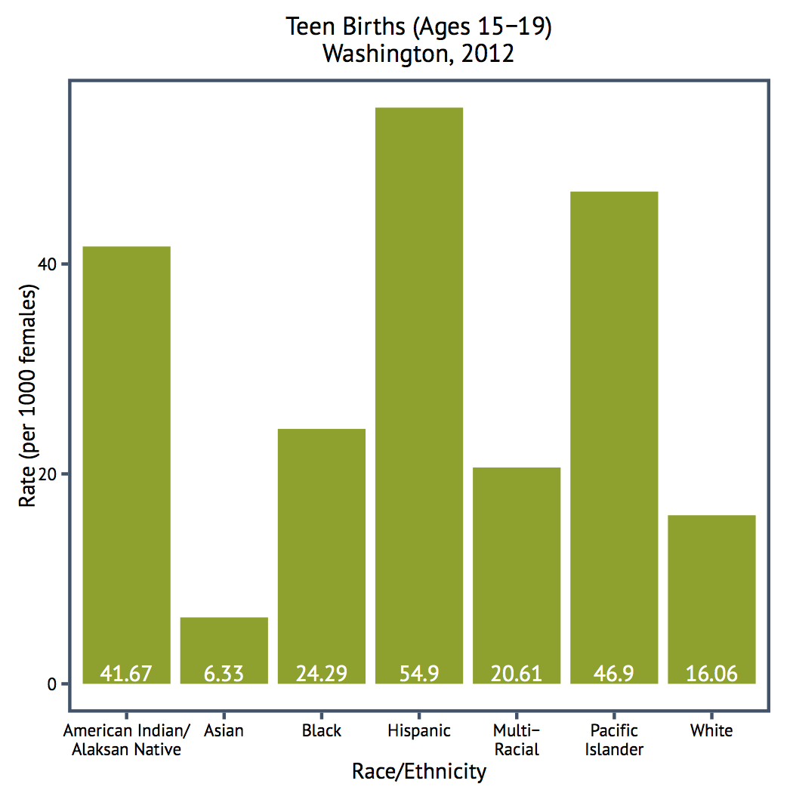
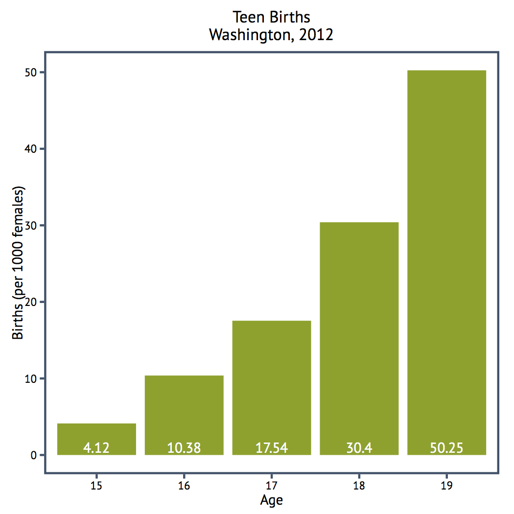
Source: Washington State Birht Certificate, WA DOH
Emotional Support for Parenting
Original survey question: Is there someone that you can turn to for day-to-day emotional help with parenthood/raising children?
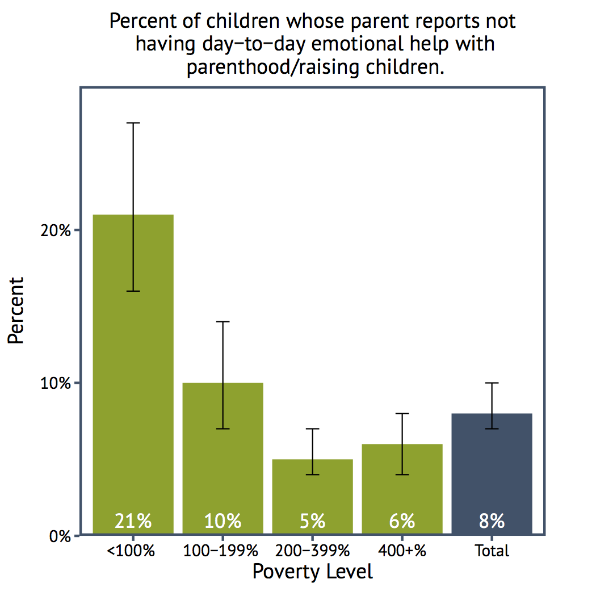
Source: Washington State data from the 2011-2012 National Survey of Children's Health (NSCH)
Stressors During Pregnancy
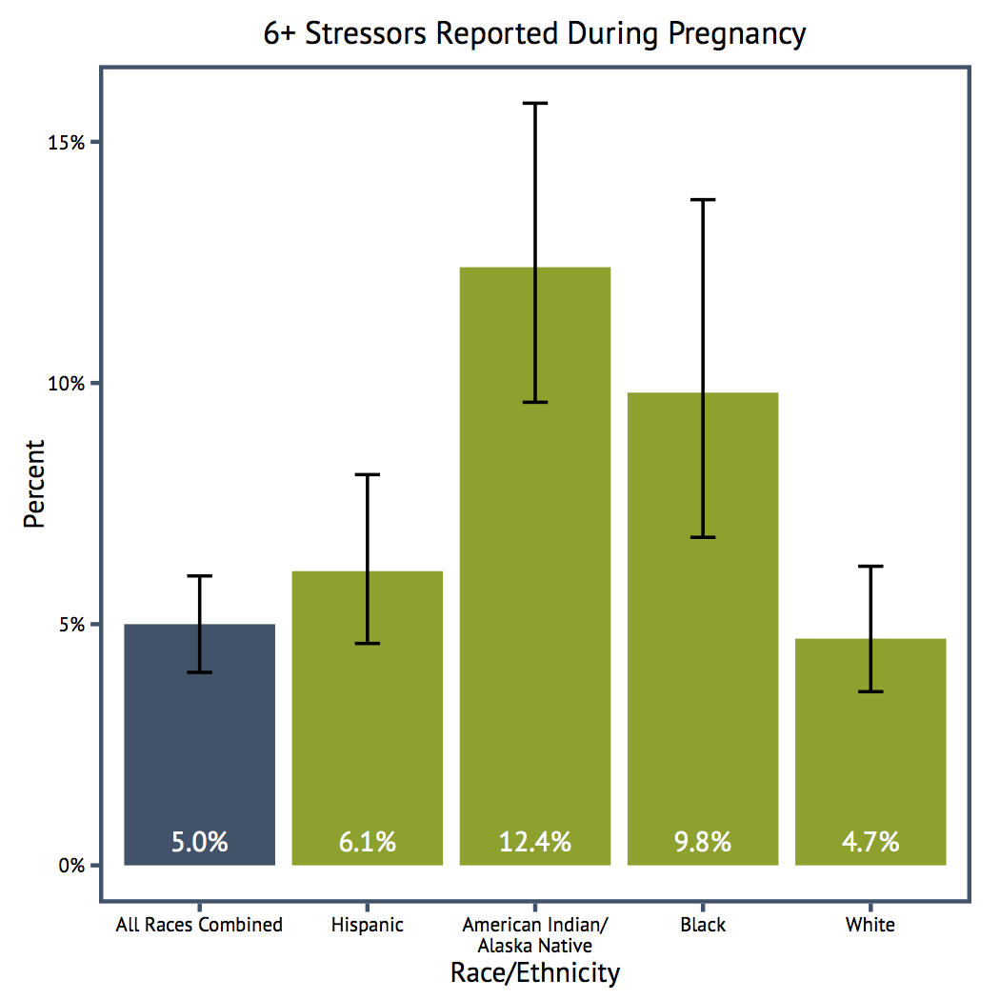
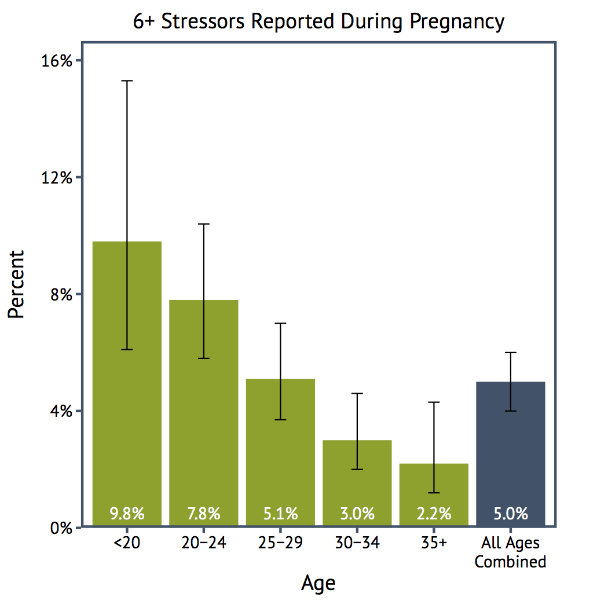
Washington County Comparison
Washington County Comparison
WA Outcomes by Age Entering Care in 2009
Permanency outcomes vary drastically by age. Reunification is always the most common outcome, but while adolescents are quick to reunify, their adoption rate is low. However, young children are adopted quickly--especially infants.
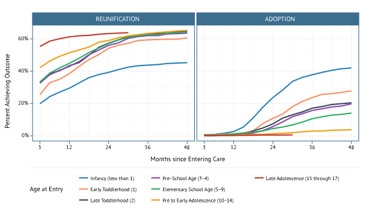
Poverty and Out-of-Home Placement
The percent of children under five living below the poverty line is especially high for minorities. Black and especially Native American children under age five in Washington are greatly overrepresented in the out-of-home care population. Despite the high poverty rate, young Hispanic children are actually placed at a lower rate than non-Hispanic white children.
Percent of children living below the poverty line, by race
Rate (per 1,000) of children under 5 who were in out-of-home care on April 1, 2014, by race
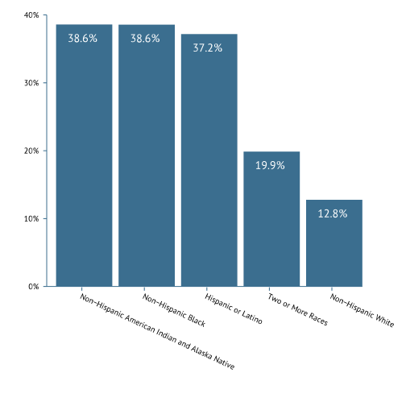
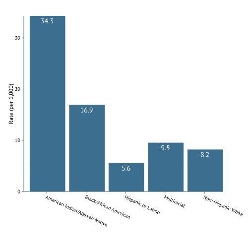
Source: CA, supplemented by US Census, via POC Data Portal.